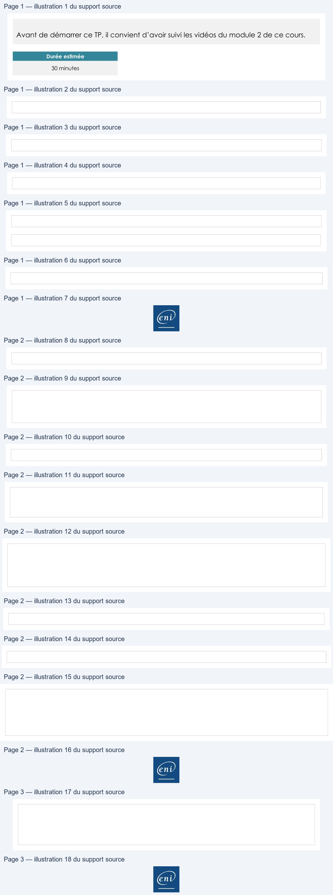

Transcription du document du Drive TSSR. La mise en forme est adaptée au Web ; les compléments IA du portail sont présentés séparément.
Page 1
Initiation à PowerShell
L’objet
TP du Module 02
Avant de démarrer ce TP, il convient d’avoir suivi les vidéos du module 2 de ce cours.
Durée estimée
30 minutes
Énoncé
Objectifs :

Comprendre le langage objet.
Utiliser les commandes de gestion de l’objet.
Consignes :
Depuis la machine CLI01 :
Utilisez la commande Get-Member pour afficher les propriétés et méthodes de l’objet
System.ServiceProcess.ServiceController
Quelle commande avez-vous utilisée ?
Indiquez deux propriétés de type String
Indiquez une méthode de type Bool et une de type int.
Affichez les propriétés du service Spooler.
Quelle commande avez-vous utilisée ?
Page 1/3
© ENI – Tous droits réservés
Page 2
Initiation à PowerShell
Quelles propriétés avez-vous affichées ?
Indiquez les valeurs de chaque propriété.
Affichez les propriétés de l’utilisateur local Adara Mcintyre.
Quelle commande avez-vous utilisée ?
Quelles propriétés avez-vous affichées ?
Indiquez les valeurs de chaque propriété.
Modifiez la valeur de la propriété de Description en Administrateur. Quelle commande
avez-vous utilisée ?
Affichez le statut du service Spooler.
Utilisez la méthode pour arrêter le service Spooler. Quelle commande avez-vous utilisée ?
Vérifier à nouveau le statut du service.
Page 2/3
© ENI – Tous droits réservés
Page 3
Initiation à PowerShell
Bonus
Utilisez la méthode de l’objet Get-Date pour renseigner la valeur de la propriété
AccountExpires du compte de l’utilisateur Axel Rios.
Testez la mise à jour de la propriété avec la commande Get-LocalUser «Axel Rios
» | select *
La valeur de la propriété AccountExpires doit être, au minimum, de 48 heures supérieure
à la date actuelle.
Solution
Une solution est proposée pour ce TP sous la forme d'un PDF commenté, disponible dans
les ressources à télécharger.
Page 3/3
© ENI – Tous droits réservés

Illustrations du support Drive — pages 1 à 3. Les images sont regroupées sans redimensionnement ; aucun contenu généré par IA.